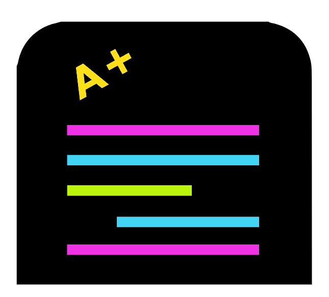
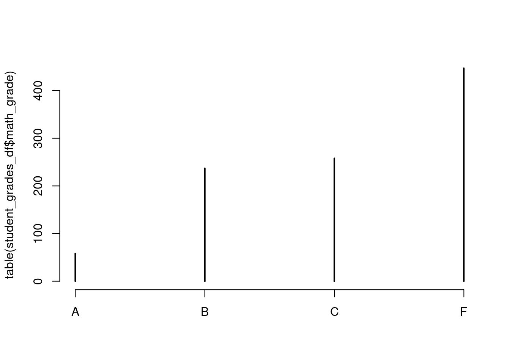
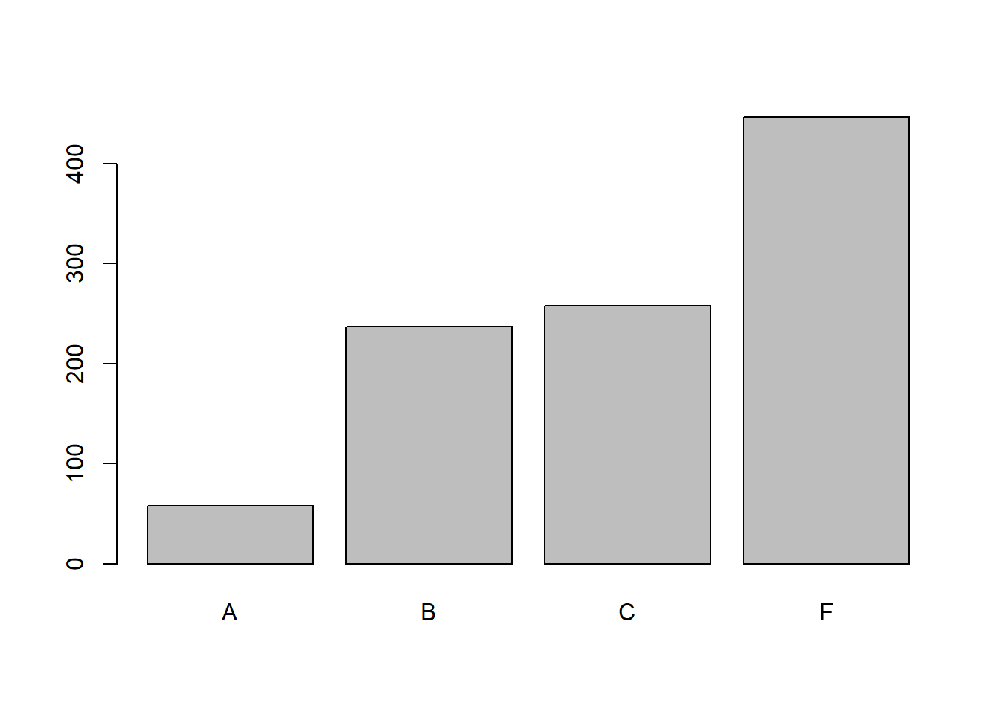
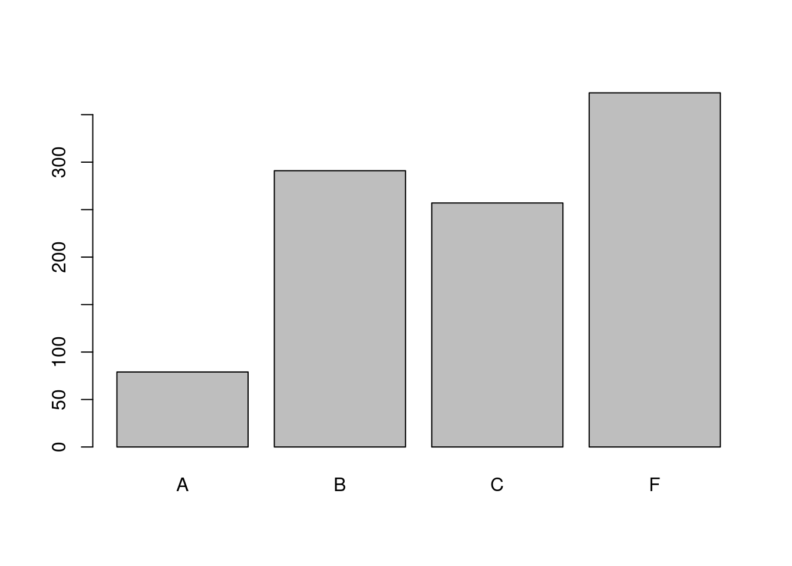
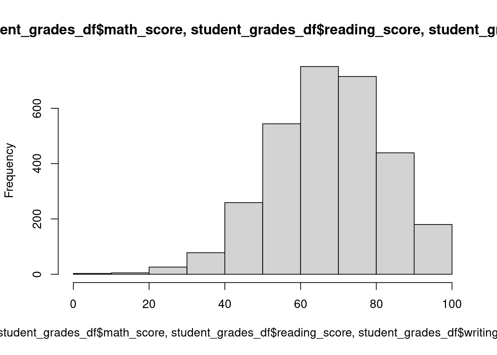
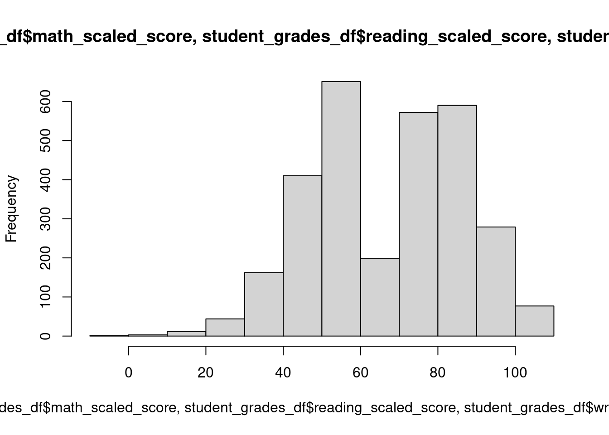
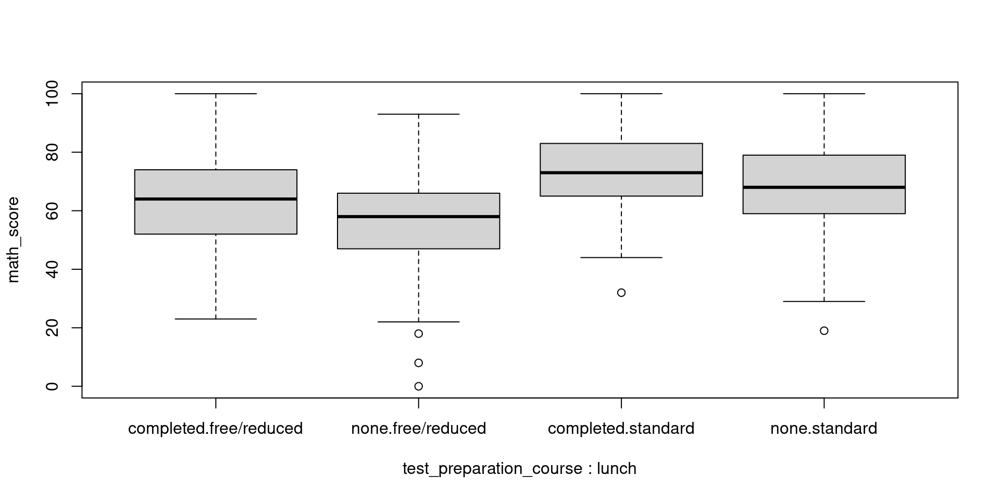

Chapter 21 Student grades example
 In this section we are going to go through analysing datasets of students grades.
21.1 The student grades data

Download the five following files into your directory "Chapter_20-21".
- student_grades_group_A.tsv
- student_grades_group_B.tsv
- student_grades_group_C.tsv
- student_grades_group_D.tsv
- student_grades_group_E.tsv
These files contain the marks secured by USA students in various subjects. The files are separated by anonymised race/ethnicity (groups A-E).
The files each contain the columns:
- gender: female or male.
- parental level of education: some high school, high school, associate's degree, some college, bachelor's degree, or master's degree.
- lunch: Whether the student ate free/reduced lunches or standard lunches.
- test preparation course: Whether the student completed a test prep course (completed) or not (none).
- math score: The student's math score.
- reading score: The student's reading score.
- writing score: The student's writing score.
Source of data: https://www.kaggle.com/spscientist/students-performance-in-exams
21.2 Analysis script
Before carrying on I would suggest to set your working directory into the directory "Chapter_20-21".
Now create a new R Script and save it as "student_grades.R" in the "Chapter_20-21" directory. It is useful to have your scripts close to their relevant data.
Ensure you use annotations and code sections to keep your script organised and tidy.
One extra tip: I normally like to keep a setwd() command at the top of my R Scripts so the script will set itself to the correct working directory. I just copy the relevant command from the console.
21.3 Reading in and preprocessing the data
We are going to first read in the data and carry out some changes to it. First we'll carry this out on just the group A data.
Read in the group A TSV (tab separated value) file:
group_a_df <- read.csv("student_grades_group_A.tsv",
sep = "\t",
stringsAsFactors = TRUE,
check.names = FALSE)When you first read in a file it is always good practice to check the resulting data frame's contents:
#Check the top 5 rows
head(group_a_df)
#View the data frame
View(group_a_df)
#Summary of each of its columns
summary(group_a_df)There are three main things we want to do with this data frame:
- Change the column names so spaces are underscores. We can carry this out with
gsub(). - Change the order of the levels for the column "parental level of education" so they are in order from least to most education. We can do this with the
factor()function. - Add a group column which will contain the information on what race/ethnicity group each student belongs to. This will contain all the same info for this data frame but it will be useful later on. We are happy for it to be a character column for now.
Let us carry out these tasks:
#Change spaces to _ in column names
colnames(group_a_df) <- gsub(pattern = " ",
replacement = "_",
x = colnames(group_a_df))
#check our change
colnames(group_a_df)
#Change the order of the parental level of education levels
edu_level_order <- c("some high school","high school",
"associate's degree","some college",
"bachelor's degree","master's degree")
group_a_df$parental_level_of_education <- factor(
group_a_df$parental_level_of_education,
levels = edu_level_order
)
#check our change
levels(group_a_df$parental_level_of_education)
#Add group column using the recycle rule
group_a_df[,"group"] <- "group_A"
#check the new column
group_a_df$groupGreat we have created code to read in our file and preprocess the data frame. We have checked the output and know it produces the data frame in the format we want.
We could copy and paste the code four times and change the relevant variable names to read in groups B-E. This would be pretty annoying and time consuming though.
Instead let us create a function to do this for us. This will mostly use the same code above with variable names changed. There are a few changes though especially for the "group_name"" column creation.
Note: The variable names used within the function should not be the same as any you are using outside the function.
#Function name: "read_and_preprocess"
#Input: file_name
read_and_preprocess <- function(file_name){
#read in the file
df <- read.csv(file_name, sep = "\t",
stringsAsFactors = TRUE, check.names = FALSE)
#column name change
colnames(df) <- gsub(pattern = " ", replacement = "_", x = colnames(df))
#Parental level of education order
edu_level_order <- c("some high school","high school",
"associate's degree","some college",
"bachelor's degree","master's degree")
df$parental_level_of_education <-
factor(df$parental_level_of_education, levels = edu_level_order)
#extract the group name from the file name
group_name <- gsub(".*_group","group", file_name)
group_name <- gsub(".tsv","", group_name)
#Add group column
df$group <- group_name
#Return df
return(df)
}We have created the _function. Now to run it with all our files:
#We can specify the option name
#This is useful when we have lots of options
group_a_df <- read_and_preprocess(file_name = "student_grades_group_A.tsv")
#But we don't need to, which is useful with less options
group_b_df <- read_and_preprocess("student_grades_group_B.tsv")
group_c_df <- read_and_preprocess("student_grades_group_C.tsv")
group_d_df <- read_and_preprocess("student_grades_group_D.tsv")
group_e_df <- read_and_preprocess("student_grades_group_E.tsv")21.4 Combining the data frames
 A lot of the time we have multiple files but we want all the data to be in one data frame.
A lot of the time we have multiple files but we want all the data to be in one data frame.
The first step is to create a list containing our data frames. A list is just like a vector except it can hold heterogeneous data (multiple classes) whilst a vector can only contain homogeneous data (one class).
We will use this so we can loop over our data frames. There is more to lists, if you would like to see more check out: https://rc2e.com/datastructures#intro-DataStructures
We'll start with creating our list then using a for loop to print out the first 3 rows of each data frame. To create a list of data frames we use the function list() just like we would with c().
#Create list
df_lst <- list(group_a_df, group_b_df, group_c_df, group_d_df, group_e_df)
#Loop through list
for (df in df_lst) {
#Print the first element of the group name column
print(df$group[1])
#Print the first 3 rows
print(head(x = df, n = 3))
}With our list we can combine the data frames into one data frame with a for loop and rbind().
It would be very simple but rbind() will not function if one of the data frames provided does not exist. We will therefore use an if statement to create a data frame for our combined data in the first loop.
We will use a new function, exists(). It will return TRUE if the provided variable exists and FALSE if it does not. The provided variable name needs to be a character (a string in quotes in this case).
#First ensure the variable we want to create does not exist
rm(student_grades_df)
#Now to loop through our list
for (df in df_lst) {
#If statment using the exists() function
#If the variable student_grades_df exists
if (exists("student_grades_df")) {
#Combine student_grades_df with df by rows
student_grades_df <- rbind(student_grades_df, df)
} else {
#else if it doesn't exist assign df as student_grades_df
student_grades_df <- df
}
}
#whilst we are here let us change the group column to a factor now
#No need to change the order as we are happy with it being alphabetical
student_grades_df$group <- factor(student_grades_df$group)21.5 Saving the data frame
You can write the new data frame to a text file. This is good if you want to use the file outside of R.
What if you want to save a R object so you can use it later without having to run all the script you used to create it or reading in a file you created?
You can use the save() function:
The above created a file called "students_grades_df" that is not human-readable. It contains the data frame student_grades_df. The name of the file and variable do not have to match but I find it easier if they do.
You can then load in the file which will load the variable with its variable name. Before we load the data we will remove our current student_grades_df object:
Saving your R objects acts as very good checkpoints after code that takes a long time to run.
21.6 Scaling & Grading
 We currently have the base scores (%) for the students but not their letter grade (A,B,C, or F in this case).
We currently have the base scores (%) for the students but not their letter grade (A,B,C, or F in this case).
Before we provide the grades we are go to scale each student's results. There are complicated ways to do this but we will get the mean score for each topic (math, writing, and reading). For each score below the mean we will minus 5 and for each score above will will add 5. Scores equal to the mean will not be affected.
#Create function to scale score vector
scale_score <- function(score_vec){
#Get mean score which we will round to 0 decimal places
mean_score <- round(mean(score_vec), digits = 0)
#Create an empty scale_score_vec to add to
scale_score_vec <- c()
#Loop through scores to scale them
for (i in 1:length(score_vec)) {
score <- score_vec[i]
#if to add 5 if larger than mean
if (score > mean_score) { score <- score + 5 }
#if to minus 5 if lower than mean
if (score < mean_score) { score <- score - 5 }
#We don't add or minus anything if the score is equal to the mean
#Add the scaled score to the scale_score_vec
scale_score_vec <- c(scale_score_vec, score)
}
#Return the created vector
return(scale_score_vec)
}
#Run the function on the topics to create new scaled score topics
student_grades_df$math_scaled_score <-
scale_score(student_grades_df$math_score)
student_grades_df$reading_scaled_score <-
scale_score(student_grades_df$reading_score)
student_grades_df$writing_scaled_score <-
scale_score(student_grades_df$writing_score)Now we have scaled the scores. Some students now have more than 100% and some have less than 0% but that is fine. It doesn't matter for their final grade.
We will give out grades based on the scaled scores like so:
- A: >=95%
- B: >=80% and <95%
- C: >=60% and <80%
- F: <60%
We can carry this out with the below code. To create it I copied the last code block and altered it. This time we use else if so the subsequent ifs only work if all the previous ifs were FALSE.
#Create function to grade a vector
grade_score <- function(score_vec){
#Create empty grade_vec to add to
grade_vec <- c()
#Loop through scores to scale them
for (i in 1:length(score_vec)) {
#get current score
score <- score_vec[i]
#if statements with else ifs
if (score >= 95) {
grade_vec[i] <- "A"
} else if (score >= 80) {
grade_vec[i] <- "B"
} else if (score >= 60) {
grade_vec[i] <- "C"
} else {
grade_vec[i] <- "F"
}
}
#Return the created vector as a factor
return(factor(grade_vec))
}
#Run the function on the topics to create the grade columns
student_grades_df$math_grade <-
grade_score(student_grades_df$math_scaled_score)
student_grades_df$reading_grade <-
grade_score(student_grades_df$reading_scaled_score)
student_grades_df$writing_grade <-
grade_score(student_grades_df$writing_scaled_score)That is the last edit we will do to our data frame so lets save it.
21.7 Some quick plots
 Below are some quick plots with their code.
Below are some quick plots with their code.
First let us see the distribution of grades for the three topics:




It seems the grades are pretty low. Maybe that is to do with our scaling and harsh grading.
Quickly we'll check the histogram of all the scores and all the scaled scores.
#scores
hist(
c(student_grades_df$math_score,
student_grades_df$reading_score,
student_grades_df$writing_score
)
)
#scaled scores
hist(
c(student_grades_df$math_scaled_score,
student_grades_df$reading_scaled_score,
student_grades_df$writing_scaled_score
)
)
We can see a big dip in the middle of the scaled scores but not in the non-scaled scores. Seems scaling just increased the distance between people who did better than others.
Last thing is we'll create a boxplot of math scores separating the x axis by some metadata.

I think that is plenty of coding for today and for this course. Thank you very much!
21.8 Tips for creating your own loops and functions
 Before you go here are some quick tips.
Before you go here are some quick tips.
- Create the code outside the loop/function to begin with.
- Test with a small object to start (e.g. a part of a data frame).
- Keep backups of code.
- If you encounter errors try running your code step by step to determine where the error is.
- It can useful to run the code inside your loop/function by setting the loop/function variable (e.g.
i <- 1)